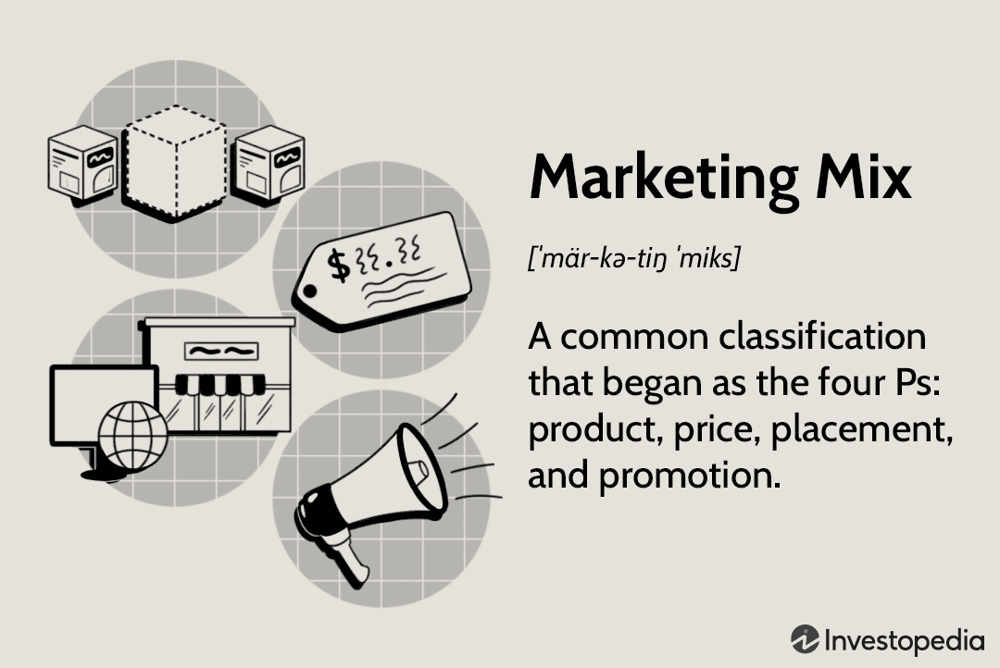
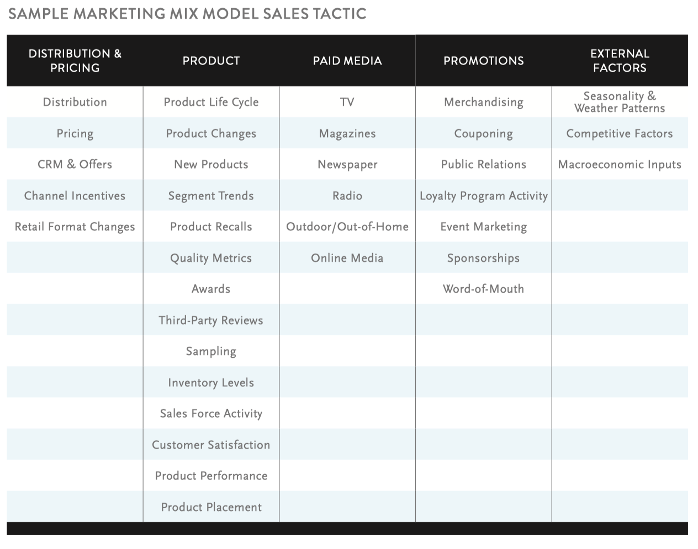

Class 14 Workshop: Marketing Mix Modeling
1 Marketing Mix Modeling
1.1 Marketing Mix

1.2 What is Marketing Mix Modeling
1.2.1 Marketing Mix Modeling
Marketing Mix Modeling (MMM) is the use of statistical analysis to estimate the causal impact of various marketing mix variables (especially pricing and promotions) on sales.
- Core idea: find an appropriate statistical model that can characterize the relationship (DGP) between sales and marketing mix variables
1.3 Phase 1: Data Collection (What to Include in a MMM Model?)

1.4 Phase 2: Statistical Modelling
- What functional forms and specifications to use for each variable?
More of an art than science
quadratic terms when diminishing returns are expected
- How to determine the “best” model
- predictive accuracy (error of predicted sales)
- model fit (\(R^2\))
1.5 Classic Examples of MMM
Example 1: Model the relationship between sales and price as follows:
\[ sales_t = \beta_0 + \beta_1Price_t + X_t\beta+ \epsilon_t \]
Example 2: Model the relationship between sales and number of influencers as follows.
- We would normally consider diminishing marginal return of marketing activities
\[ sales_t = \beta_0 + \beta_1NumInflu + \beta_2NumInflu^2 + X_t\beta+ \epsilon_t \]
1.6 Phase 3: Model-Based Optimization
The outputs from your MMM project – that is, the data and estimates that come out of your statistical model – need to address the profit maximization problem.
- The MMM model will produce a host of outputs that measure how each tactic (e.g., price) affects sales.
- We can then use the outputs to guide our marketing decisions.
1.7 Optimal Pricing to Maximize Profit
- We can utilize the outputs to compute the optimal pricing
\[ sales_t = 1000 - 20 Price_t + X_t\beta+ \epsilon_t \]
- Then we know, conditional on \(X_t\), the total revenue would be
\[ profit = (Price - COGS) *sales = (Price - COGS)*(1000 + X_t\beta - 20*Price) \]
- We can derive the optimal price to maximize profit.
\[ \partial profit/\partial price = (1000 + X_t\beta - 20 Price) - 20 (Price - COGS) = 0 \]
The optimal price that can maximize the revenue/profit is \(\frac{1000 + X_t\beta+20COGS}{40}\)
In term 2’s Operations Analytics module, you will systematically learn how to find the optimal pricing, given the estimated functional relationship between sales and marketing mix variables.
2 Zalora Case
- Please take out the Zalora quarto document. Let’s go through how we can build a marketing mix model for Zalora to optimize its profit.